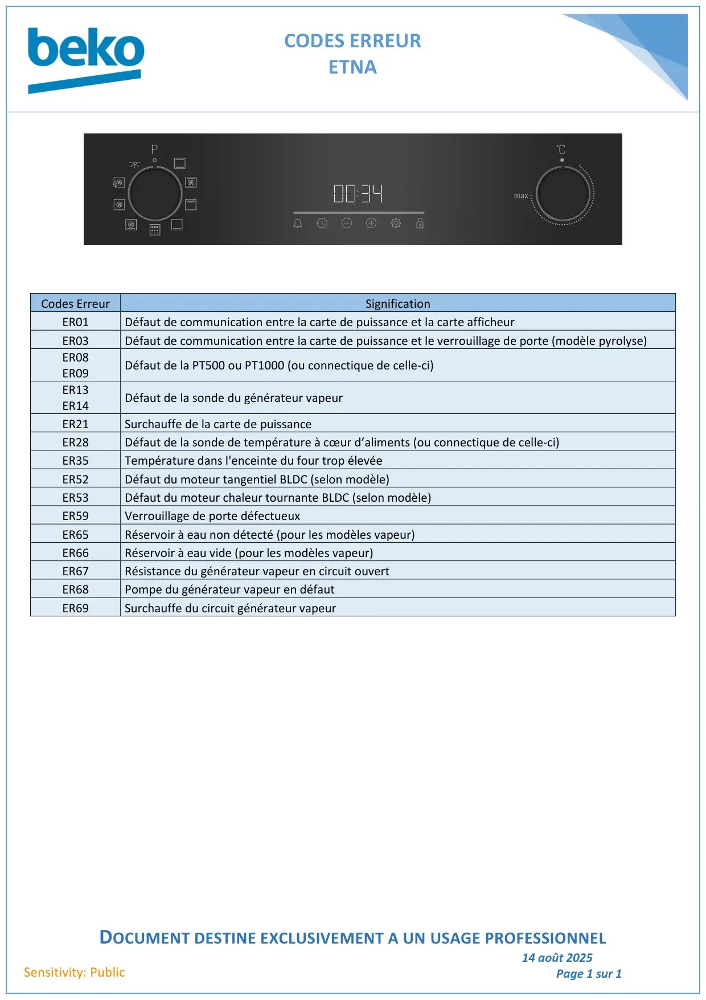

CODES ERREURETNADOCUMENT DESTINE EXCLUSIVEMENT A UN USAGE PROFESSIONNEL14 août 2025Page 1 sur 1Sensitivity: PublicCodes ErreurSignificationER01Défaut de communication entre la carte de puissance et la carte afficheurER03Défaut de communication entre la carte de puissance et le verrouillage de porte (modèle pyrolyse)ER08ER09Défaut de la PT500 ou PT1000 (ou connectique de celle-ci)ER13ER14Défaut de la sonde du générateur vapeurER21Surchauffe de la carte de puissanceER28Défaut de la sonde de température à cœur d’aliments (ou connectique de celle-ci)ER35Température dans l'enceinte du four trop élevéeER52Défaut du moteur tangentiel BLDC (selon modèle)ER53Défaut du moteur chaleur tournante BLDC (selon modèle)ER59Verrouillage de porte défectueuxER65Réservoir à eau non détecté (pour les modèles vapeur)ER66Réservoir à eau vide (pour les modèles vapeur)ER67Résistance du générateur vapeur en circuit ouvertER68Pompe du générateur vapeur en défautER69Surchauffe du circuit générateur vapeur
1 / 1